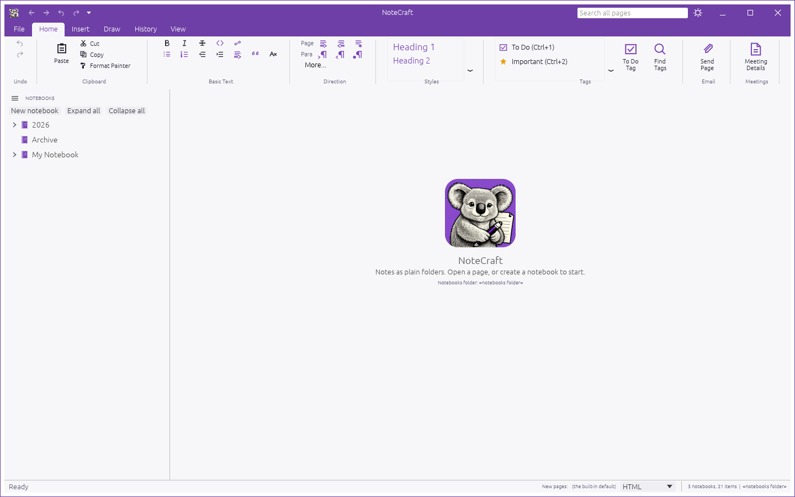

This guide explains importing a complete notebook folder or one importable file. The source stays unchanged.
L'analyse de OneNote est fournie par OfficeIMO, un projet open source distribué sous licence MIT.
Choose Import notebook folder and select a folder such as 2026. Its name becomes the notebook name. Nested folders become section groups and .one files become sections.
Choose Import file and select one .one file. NoteCraft creates a notebook named after the file.
NoteCraft creates the destination inside the configured notebooks folder, opens the imported notebook after a successful import, and adds it to Recently opened. The original OneNote files are never changed. A progress dialog shows the current section and lets you cancel safely.
If a notebook with the same name already exists, NoteCraft avoids overwriting it by adding a Windows-style suffix: 2026, 2026 (1), 2026 (2), and so on.
Folder imports recurse through nested folders. Folders become section groups, .one files become sections, and pages and nested pages keep their names and hierarchy.

While an import is running, NoteCraft shows one themed progress dialog with the current section, progress count, and a Cancel import button.